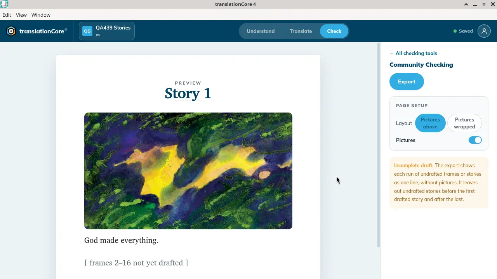
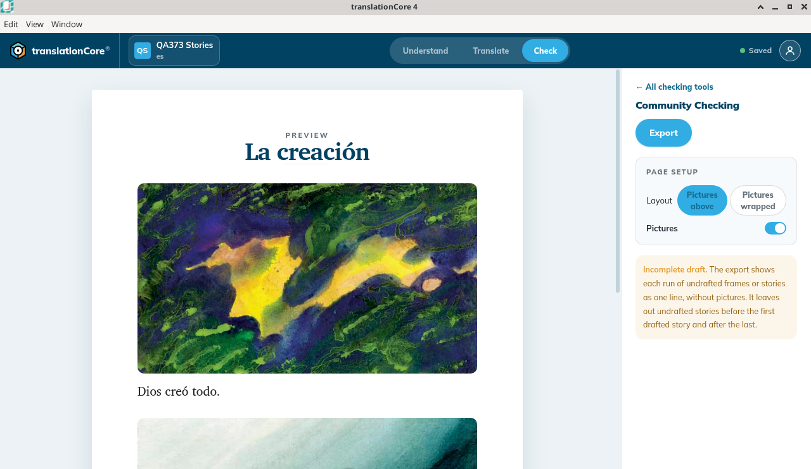
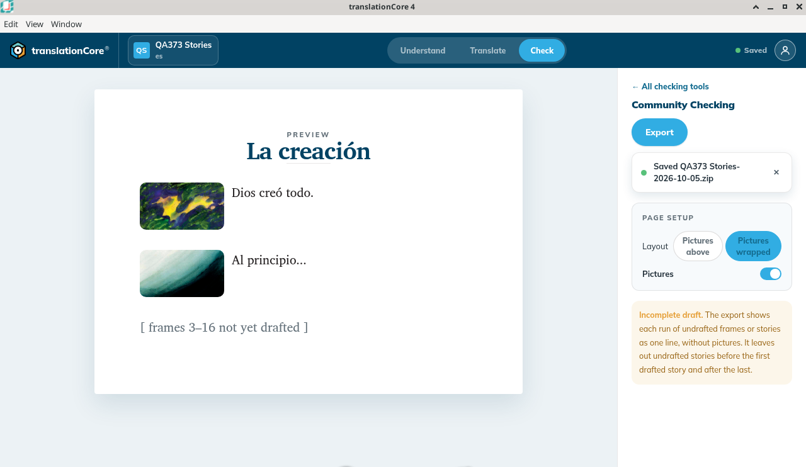

Story preview and export
Preview a story as a page with its pictures, adjust page setup, and export PDF, Story Markdown or a Scripture Burrito.
Where in the app: Open a story › Check › Community Checking › Open →
What it is
The story version of Community Checking. You preview the story as a page, set pictures and layout, then export a copy for reviewers.
Step by step
- Open a story and click Check. If the last checking tool you used opens instead of the list, click ← All checking tools.
- Click Open → on the Community Checking card.
- Optional: turn Pictures on or off, and choose Pictures above or Pictures wrapped.
- Click Export and pick Export PDF, Story Markdown (.zip) or Scripture Burrito (.zip).
See Export stories as PDF or Markdown and Export a project as a Scripture Burrito.
What you should see
- The preview is labelled PREVIEW and Story 1. Frame 1 shows its picture and "God made everything." A line reads "[ frames 2–16 not yet drafted ]". A reference line was not in view.
- Page setup Layout is Pictures above or Pictures wrapped. Pictures can be on or off. On this pass Pictures above was selected and Pictures was on.
- A story's Page setup has no Columns, Spacing or Paper size rows. Those are for Bible books only.
- The Export menu offers Export PDF, Story Markdown (.zip) and Scripture Burrito (.zip).
Screenshots

Screenshot comingQA439 Stories preview of Story 1: picture, God made everything., and [ frames 2–16 not yet drafted ]. Layout is Pictures above. Pictures is on.
img/obs-community-checking-1.png
Screenshot comingBuild 79d3017, QA373 Stories: the preview La creación with the frame-1 picture and Dios creó todo. Page setup has only Layout (Pictures above, selected, or Pictures wrapped) and Pictures (on). No Columns, Spacing or Paper size.
img/obs-community-checking-2.png
Screenshot comingThe same story with Layout set to Pictures wrapped: small pictures beside Dios creó todo. and Al principio..., then [ frames 3–16 not yet drafted ]. The message Saved QA373 Stories-2026-10-05.zip is from the export just before.
img/obs-community-checking-3.pngTips
- There is no Align card on stories — only Translation Notes, Translation Words and Community Checking.
- Pictures wrapped puts a small picture beside each frame's text, so more of the story fits on a page. Pictures above puts a large picture above each frame.
- Stories have no Spacing or Paper size choice. The story PDF on this build was A4.
- A run of undrafted frames is one line, without a picture. On this run that line was "[ frames 2–16 not yet drafted ]". The on-screen note begins "Incomplete draft. The export shows each run of undrafted frames or stories as one line, without pictures…"
Known limits
- The story PDF is always A4; there is no Letter choice for stories yet.
- The first page of the story PDF has only the story title. The frames start on page 2.